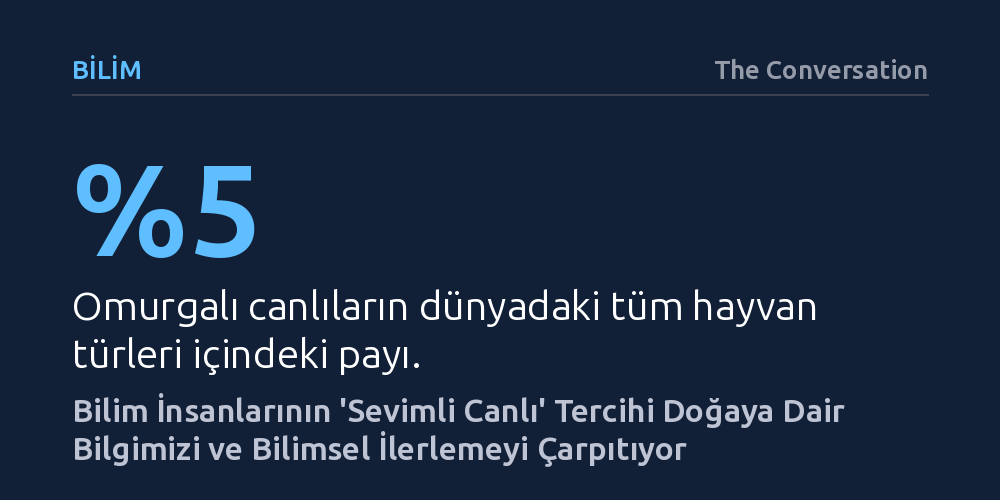

BILIM · The Conversation · 2026-10-19
Ekoloji ve evrim alanındaki 1,4 milyon makalenin analizi, bilim insanlarının türlerin yüzde 95'ini oluşturan omurgasızlar yerine sevimli buldukları omurgalılara odaklandığını ortaya koydu. Üstelik araştırmalardaki bu taksonomik önyargı, son yirmi yılda azalmak yerine daha da derinleşti.
Bilimin doğaya bakışının nesnel bir meraktan ziyade çocukluktan kalan estetik beğenilerle şekillendiğini ve bu ihmalin kritik ilaç keşiflerini engellediğini gösteriyor.

Yeryüzündeki yaşamın işleyişini kavramak; canlıların nasıl hayatta kaldığını, nasıl evrildiğini ve çevreleriyle nasıl bir etkileşim ağı kurduğunu incelemekten geçer. Ne var ki gezegenimizdeki türlerin sayısı, bilim dünyasının her birini ayrıntısıyla araştırabilme kapasitesinin fersah fersah ötesindedir. Bir seçim anketi düzenlerken her bir yurttaşla görüşmek imkânsız olduğundan tüm toplumu dengeli temsil eden bir örneklem kurulması gerektiği gibi, biyolojik araştırmalarda da doğayı adil yansıtan bir tür dağılımı beklenir. Ancak araştırmacıların merceğini hangi canlıya çevireceğini ekolojik temsil gücü değil, insanların doğuştan getirdiği kişisel merakı belirliyor.
Dünya aslında omurgasız canlıların egemenliğinde bir ekosistemdir; böcekler, örümcekler, solucanlar ve yumuşakçalar hayvanlar âleminin ezici çoğunluğunu oluşturur. Memeliler, kuşlar, balıklar, sürüngenler ve iki yaşamlılardan oluşan omurgalılar ise yeryüzündeki toplam hayvan türlerinin yalnızca yüzde beşine tekabül eder. Doğal olarak bilimsel çalışmaların ezici bir bölümünün omurgasızlara ayrılması gerekirken, biyoloji dünyası gerçek tablonun tam tersine işleyerek ilgisini ve emeğini küçük bir azınlığa vakfetmiş durumdadır.
Biyomedikal dışındaki ekoloji ve evrimsel biyoloji yayınlarını kapsayan yeni bir araştırma, 600'den fazla bilimsel dergide yayımlanmış yaklaşık 1,4 milyon makaleyi inceleyerek bilim insanlarının tercihlerindeki devasa uçurumu ortaya koydu. Taranan makalelerin yarıdan fazlasının yalnızca omurgalı türlerine odaklandığı tespit edildi. Üstelik bu taksonomik kayırmacılığın ilk kez bilimsel olarak saptandığı yirmi yıl öncesine kıyasla durum düzelmek bir yana, bazı alt alanlarda daha da vahim bir hal aldı. Örneğin deniz ve tatlı su biyolojisinde balıklara ayrılan makale oranı 2001'de yüzde 35,8 iken 2025 yılında yüzde 49,7'ye tırmandı. Bu artış, deniz ekosistemlerinin belkemiği olan mercanlar, kabuklular ve yumuşakçalar gibi sucul omurgasızların araştırma pastasından daha da dışlanması pahasına gerçekleşti.
Araştırmacıların 868 hayvan davranışı uzmanıyla gerçekleştirdiği anket ise bu tercihin altında yatan psikolojik dinamikleri aydınlattı. Bilim insanlarının da sokaktaki insandan farksız olduğu ve araştırma konusu seçerken duygularıyla hareket ettiği görüldü. Kuşlar ve memeliler gibi sevimli ve 'karizmatik' bulunan canlılar araştırmacılardan açık bir sempati toplarken, örümcekler ve benzeri eklem bacaklılar dışlanıyor. Çocuklukta şekillenen toplumsal algılar ve estetik beğeniler, bir kişi akademisyen olduğunda da değişmiyor; sosyal medyanın ve haberlerin sevimli hayvanları öne çıkaran yayın politikası da bu duygusal önyargıyı sürekli besliyor.
Araştırmaların yalnızca göze hoş gelen veya sempatik bulunan canlılara yönelmesi, bilimsel ilerlemenin en büyük yakıtı olan beklenmedik keşiflerin önünü tıkıyor. Oysa modern bilimin ve tıbbın en önemli dönüm noktalarından bazıları, toplumun genellikle 'çirkin', 'iğrenç' ya da 'tehlikeli' olarak yaftaladığı canlıların incelenmesi sayesinde gerçekleşti. Örneğin 1980'lerde zehirli bir kertenkele türü olan Gila canavarının tükürüğü üzerine yürütülen merak odaklı temel araştırmalar, bugün obezite ve diyabet tedavisinde devrim yaratan Ozempic gibi yeni nesil ilaçların geliştirilmesine zemin hazırladı.
Bunun yanı sıra yılan, örümcek ve akrep zehirlerinde bulunan ölümcül toksinler günümüzde bağımlılık yapmayan güçlü ağrı kesicilerin geliştirilmesinde kullanılıyor. 1960'larda ışıldayan bir denizanası türünden elde edilen yeşil floresan proteinin (GFP) keşfi ise mikroskop altında canlı hücrelerin ve moleküler süreçlerin anlık olarak izlenmesini mümkün kılarak biyolojide çığır açtı ve 2008'de Nobel Kimya Ödülü'ne layık görüldü. Bu tarihi başarılar, doğanın sunduğu faydaların canlının tüylü ya da fotojenik olmasıyla hiçbir ilgisinin bulunmadığını; ilerlemenin sabır, zaman ve önyargısız bir merak gerektirdiğini açıkça ortaya koyuyor.
İnsan faaliyetlerinin yol açtığı küresel tahribat, canlı çeşitliliğini benzeri görülmemiş bir hızla yok ediyor. Özellikle ekosistemlerin temel yapı taşı olan böcek popülasyonları hızla tükenirken, pek çok böcek türü henüz bilim dünyası tarafından adlandırılıp kayda geçirilmeden yeryüzünden silinme tehlikesiyle karşı karşıya. Bir türü daha varlığını keşfedemeden kaybettiğimizde, yalnızca doğadaki bir denge zincirini koparmış olmuyoruz; aynı zamanda o canlının insan sağlığına ya da teknolojisine sunabileceği tüm potansiyel faydaları da ebediyen yitiriyoruz.
Tablo karanlık görünse de araştırmacıların tespit ettiği umut verici bir bulgu var: Bilim insanları ihmal ettikleri canlı gruplarıyla bizzat çalıştıklarında, o canlılara duydukları takdir ve ilgi belirgin biçimde artıyor; yani tanışıklık hayranlığı doğuruyor. Ancak bu zihniyet değişimini yalnızca bilim insanlarının kişisel inisiyatifine bırakmak yeterli değil. Hükümetlerin ve üniversitelerin fon mekanizmalarını yeniden kurgulayarak popüler olmayan canlılara yönelik araştırmaları öncelikli olarak desteklemesi gerekiyor. Toplumun da sosyal medyada sadece tüylü sevimli maskotları değil, ekosistemi sırtlayan isimsiz omurgasızları görünür kılması, bilimsel dikkatin hak ettiği yere yönelmesinde kritik bir kaldıraç olabilir.